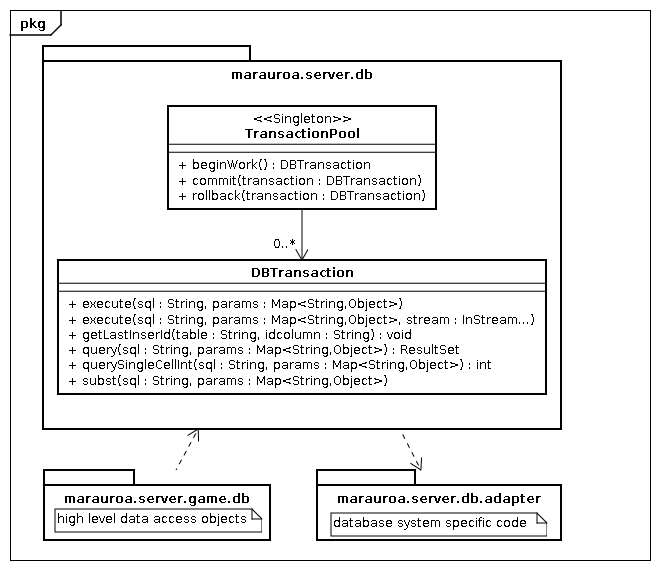

Package marauroa.server.db
package marauroa.server.db
This package contains low level database stuff. In most cases you want to use the high level database access classes in marauroa.server.game.db.
The following class diagram shows the important classes in this package and how they work together with other packages.

-
Class SummaryClassDescriptiona database transactionA helper class that runs SQL scripts.direct access to DBTransactions on arbitrary databases.Helper class to validate strings and escape SQL strings.Connection Pool.updates the structure of the database to the newest versoin
-
Exception SummaryExceptionDescriptionThis exception is thrown when the database connection cannot be established.